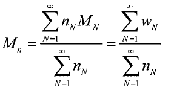

平成29年度 問29 高分子化学
一般に高分子の数平均分子量Mnは、次のように定義される。

ここで、MNは重合度Nの高分子（N量体）の分子量、nNは系に含まれるN量体の物質量［mol］、wNは分子量MNを持つ分子の質量である。分子量1万、5万、10万の高分子をそれぞれ、10g、40g、50g混合したとき、この混合物の数平均分子量は、次のうちどの範囲にあるか。
①
0,000～20,000
②
0,001～35,000
③
5,001～50,000
④
0,001～65,000
⑤
65,001～80,000
正答
③ 5,001～50,000
分子量1万、5万、10万の高分子をそれぞれ、10g、40g、50g混合したとき、それぞれの分子量は10/10,000 mol、40/50,000 mol、50/100,000 molです。
よって数平均分子量は(10,000×10/10,000＋50,000×40/50,000＋100,000×50/100,000) / (10/10,000＋40/50,000＋50/100,000)＝(10+40+50) / {(10+8+5)/10000}＝43,478です。よって35,001～50,000の範囲にあります。